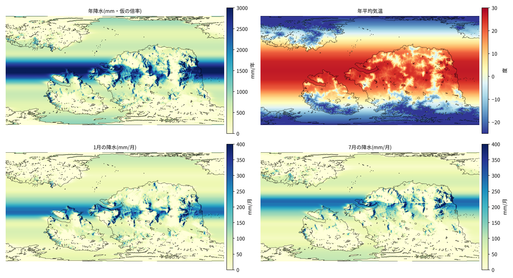

← ハブへ
気候シミュレーター 簡易版(基本値)
2026-11-28 試作。ユーザー指示「気候シミュレーターで水を作る。初期値は真剣に作る。作ってみて。簡易版」。仮=係数はすべて仮(地球の帯平均に似せた目分量)。世界は seed31。
概要
- 地図データ(高さ・陸海)から、月ごとの気温・風・降水(水の発生)を1回だけ計算して保存した。これが「基本値」。
- 水の動き: 海で蒸発→風で運ぶ→冷えると雨になる。山で雨が増え、風下は乾く(雨陰)。赤道の多雨帯と亜熱帯の乾燥帯が、季節でずれて現れた。
- 水の収支は合っている(蒸発÷降水 = 1.02)。全球平均は年1000mmに合わせた仮の倍率。
絵(年降水・年平均気温・1月と7月の降水)

左上=年降水(mm) 右上=年平均気温 下=1月と7月の降水(mm/月)。黒線=海岸。
実測(seed31・半分の解像度 700×350・1マス≒11.7km)
| 項目 | 値 |
|---|
| 全球平均の降水 | 1000 mm/年(倍率で合わせた仮) |
| 陸の平均 / 海の平均 | 790 / 1199 mm/年 |
| 水の収支(蒸発÷降水) | 1.02 |
| 陸の平均気温 | 6.3 度 |
| 陸で年250mm未満の割合 | 58 %(氷河などの極地を含む) |
| 陸で年2000mm超の割合 | 8 % |
| 陸で降水が可能蒸発散の半分未満の割合 | 27 % |
目で見た評価(Claude)
- よく出た点: 赤道の多雨帯が1月と7月でずれる/亜熱帯(緯度15〜30度)の乾燥/山で降り、風下の低地は乾く/陸は海より少ない。
- 気になる点: 大陸の内陸が広く乾いている(乾燥が強め)/7月の多雨帯が陸の上で細い線になる(収束帯の帯の幅が一定のため)/中緯度の西岸の雨が弱い。
限界・未確認
- 係数(風の帯・蒸発の速さ・雨のなりやすさ・標高6km・気温の曲線)はすべて目分量の仮。地球の観測データとは照合していない。
- 入っていないもの: 海流・季節風(モンスーン)・気圧・雲・雪の積もりと溶け・ファンタジーの魔力の影響。
- 半分の解像度で計算した。川・湖・水位は扱っていない(持ち主が未決)。
- seed31 の1つの世界だけで試した。
- まだ地図データには書き込んでいない(保存したのは別ファイル)。土地の類推(気候帯)も未実装。